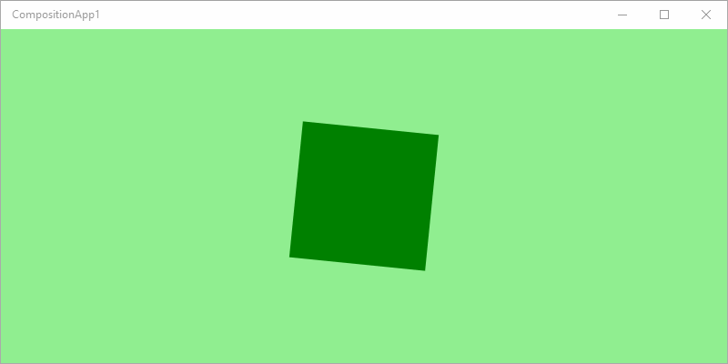
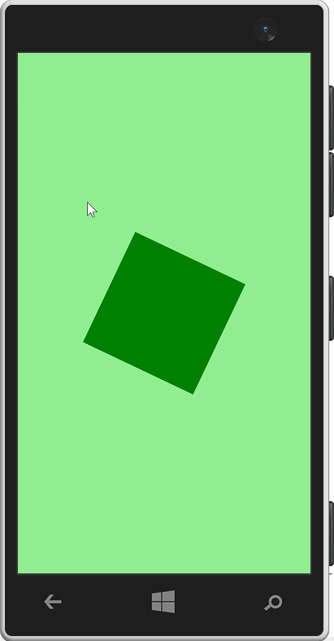

A framework-less project for creating apps using the visual layer and Windows.UI.Composition APIs.
Desktop

Mobile

Note: above GIF animations runs at 8fps, the actual animation in the app is supersmooth thanks to Windows 10's visual layer.
< Back